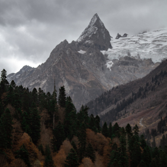

Жак-Ив Кусто Жак-Ив Кусто Жак-Ив Кусто Жак-Ив Кусто Жак-Ив Кусто Жак-Ив Кусто Жак-Ив Кусто Жак-Ив Кусто Жак-Ив Кусто
Исследователь океана Исследователь океана Исследователь океана Исследователь океана Исследователь океана Исследователь океана Исследователь океана Исследователь океана Исследователь океана
-

Карачаевск
-

Гора эльбрус
-

Домбай
-

Москва, Красная Площадь
-

Соловки
-

Кремль Ростова Великого
-

Муром
-

Зима в Салехарде